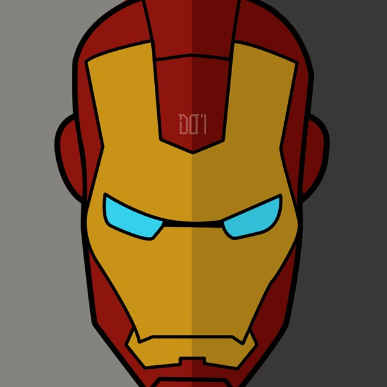

Selamat Datang di Aplikasi Biodata

Muhamad Nur Arifin
About Me.

Seorang mahasiswa yang sedang menempuh pendidikan Strata 1 (S1) Teknik Informatika di Universitas Muhammadiyah Jakarta.
Aktif sebagai Asisten Lab dan ber-organisasi di HMIF BEM FT-UMJ (hmif.org).
Passions:
- - IT Security
- - Web Programming
- - Mobile Programming
- - Research